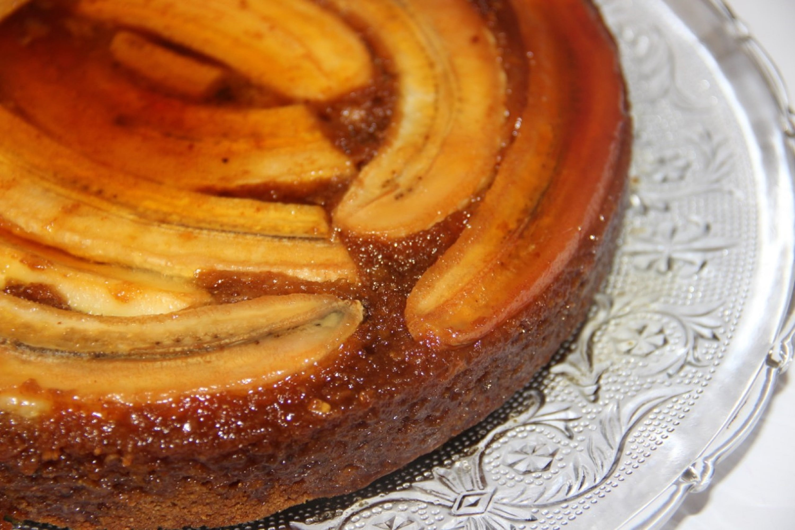

Home
Banana Cake

Description
This banana cake is one of the easiest cakes we've ever made. Ever. You can make this banana cake plain, or use it as a starting point. Check the tip at the bottom of the page to read how to add nuts, dried fruit, chocolate chunks or spices too.
If you don't have scales, you can measure the ingredients using a yoghurt pot – all the details are in the recipe tips. Watch the video to learn how to make our easy banana bread, using up those tired bananas and reducing food waste.
Each serving provides 303 kcal, 5.2g protein, 34.3g carbohydrate (of which 13.9g sugars), 15.8g fat (of which 1.5g saturates), 1.6g fibre and 0.43g salt.
Ingredients
- 3 very ripe medium bananas (around 225g/8oz peeled weight)
- 3 large free-range eggs
- 100g/3½oz soft light brown sugar
- 150ml/5fl oz sunflower or vegetable oil
- 275g/9¾oz white self-raising flour
- 1 tsp ground mixed spice
- 1 tsp baking powder
Steps
- Preheat the oven to 180C/160C Fan/Gas 4 and grease and line a 900g/2lb loaf tin with baking parchment or use a loaf tin liner.
- eel the bananas and mash with a fork. Tip into a large mixing bowl and add the eggs, sugar and oil. Use a fork or whisk to combine.
- Add the flour, spice and baking powder and whisk together until thoroughly combined. Pour into the prepared tin. Bake for 40 minutes, or until the cake is well risen and a skewer inserted into the centre comes out clean.
- Cool in the tin for 10 minutes, then turn out onto a wire rack. Serve warm or cold in slices. Spread with butter if you like.